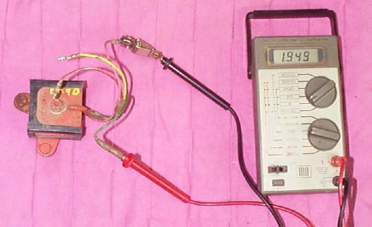

A charging coil makes alternating current (AC), which swings positive and negative. A battery can charge only on one direction. The rectifier holds diodes, which pass current one way only, so the output becomes direct current (DC). Older small bikes have a half-wave rectifier. Most modern bikes have a full-wave rectifier with four diodes, often in the same case as the regulator. This page shows the quick ohmmeter test for a rectifier that is out of the bike.
Safety
- Switch the ignition off and disconnect the battery before you unplug the rectifier.
- Do not turn the central bolt that holds the diodes together. It can short them out.
- The rectifier gets hot in use. Let it cool before you handle it.
You need
- A multimeter set to ohms.
- The wiring diagram for your bike, to know which wire is which.
- If the rectifier and regulator are one unit, check the regulator too. See Test the regulator rectifier.
Steps
- Unplug the rectifier from the harness. Remove it from the bike if the case or the mounting stud is hard to reach.
- Put one meter lead on one output wire. Put the other lead on the metal mounting stud or case. Note the reading.
- Swap the leads and note the reading again.
- A good diode gives a very different reading in the two directions. One direction reads low, the other reads high or OL.
- Repeat for every wire on the rectifier.
- If both directions read about the same, the diode leaks and is no good.
- If both directions read OL, or both read zero, the diode is open or shorted and is no good.
- If you have no ohmmeter, a test light with a small battery in line works in the same way. The light should glow in one direction and not in the other.
How to tell
| Reading in the two directions | Meaning | Action |
|---|---|---|
| Low one way, high or OL the other | Diode works | Test the next wire |
| Same both ways | Diode leaks | Replace the rectifier |
| OL both ways | Diode open | Replace the rectifier |
| Zero both ways | Diode shorted | Replace the rectifier |
The exact numbers matter less than the big difference between the two directions. Use your bike's manual for any specified values.
Check your work
- Every wire shows a clear difference when you swap the leads.
- After refitting, the battery voltage rises when the engine runs. See Test the charging system.
If it did not fix the problem
- A main fuse that keeps blowing can mean a failed diode letting battery current flow back to earth. See Fuse keeps blowing.
- Check the charging coils with Test the stator (generator coils).
- If the battery is overcharged and bulbs blow, see Battery overcharges and bulbs blow.
- Take a unit that tests good to a workshop if the charging fault remains.